Designing the next phase of an ethical data platform
Mozilla Data Collective lets communities and organizations share datasets for AI on their own terms. Version one proved people would upload and download. The next phase had a harder job: give data owners real control over who gets their data, give buyers a reason to trust what they download, and build services the platform can grow on. I designed that phase, from the site architecture down to the screens.
Every screen in this case study was built through Claude Code and the Figma MCP server. I didn't place a single pixel by hand.
- Role
- Senior designer
- Timeline
- 2025 – 2026
- Worked with
- Product, engineering, R&D, partnerships, and data communities
- Research
- Pricing market research across 200+ datasets, demand survey and false door, flow mapping, open-question reviews
- Tools
- Claude Code and the Figma MCP server. No hand-placed pixels.
- Outcome
- The architecture and flows for a platform of 600+ datasets from 190+ vetted organizations in 300+ languages. Request to Access and the Data Assistant launched in May 2026.
The problem
Two groups had to trust the platform at the same time, and they wanted opposite things. Data owners, from language communities to archives, wanted to share without losing control: who can download, for what, and on what terms. Buyers wanted to find good data fast, without guessing whether it's documented, licensed properly, or safe to use.
Every new feature touched both sides, plus payments, verification, and messaging underneath. Designing them one screen at a time would have made a mess.
Trust in a data platform isn't a badge. It's a set of decisions about who can do what, made visible to everyone involved.
Find out what data is worth, and what people would pay
Paid datasets and subscriptions only work if the prices make sense. So I started with the market: I researched and catalogued the prices of more than 200 datasets sold elsewhere, then used that range to validate where Mozilla Data Collective's pricing and paid tiers should sit.
Then, before committing engineering time, I put a short survey and a false door in front of real users on the browse page. It asked which premium features mattered most, such as unlimited downloads, benchmarks against industry standards, warehouse integrations, and custom data bundles. It also asked what a fair monthly price would be on a slider, and what kind of organization they were.
ThinkingMarket prices tell you what data sells for. Users tell you what they'd pay you for it. Checking one against the other turned a feature list into a pricing case the business could plan around.
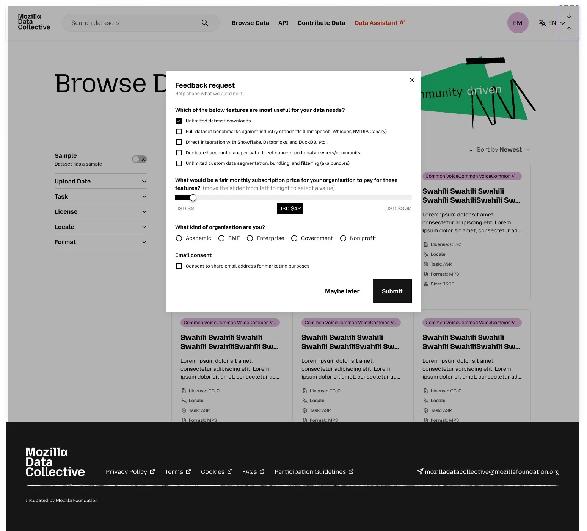
Site architecture before screens
I mapped the platform in three layers: public discovery, an authenticated workspace split by role (uploader and downloader), and the systems that cut across everything: verification, messaging, quality signals, payments, and notifications.
Every feature on the map carries its free and paid versions, an estimate of the value it adds, and whether it still needs a flow or a mid-fidelity wireframe. That turned the map into a shared backlog that product, engineering, and R&D could argue with directly.
ThinkingWhen one feature touches five systems, the map is the design. It showed us early that access controls, verification, and messaging were one problem, not three.
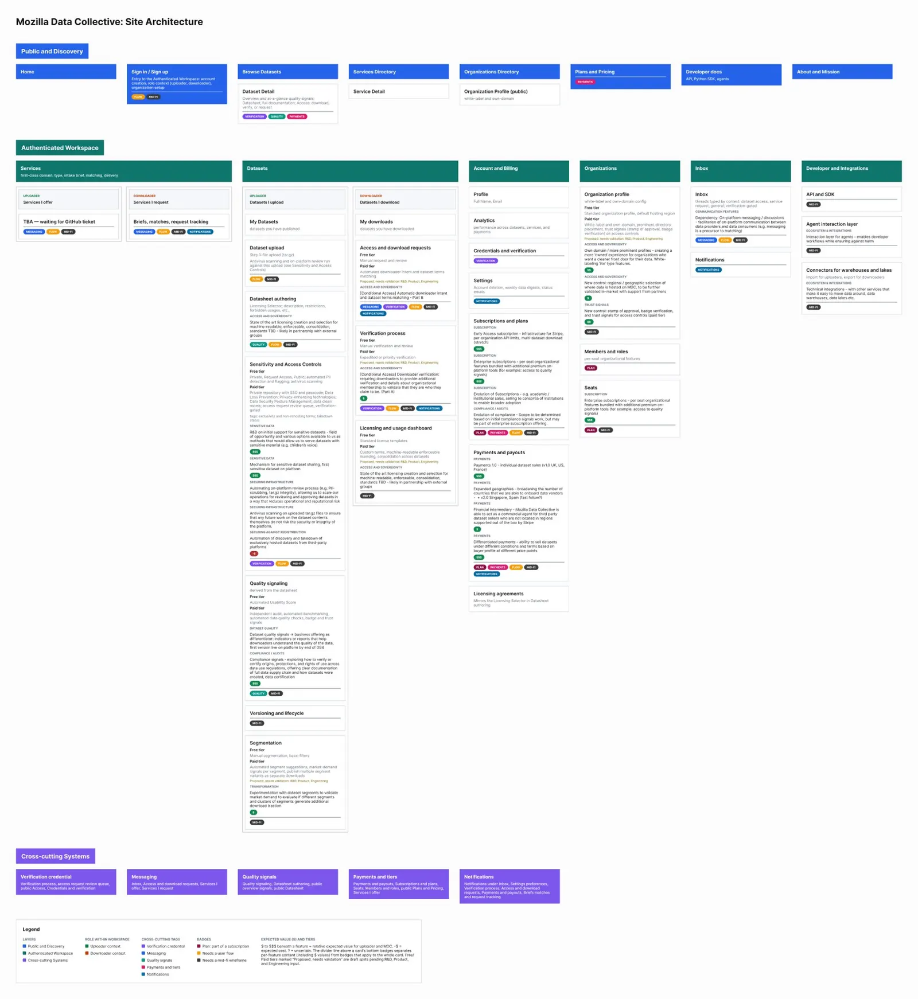
Let owners decide who gets in, without a manual queue
Data owners wanted to approve every download. In practice that means a queue nobody keeps up with. I designed rules instead: an organization is verified once, against a public registry, and screened automatically. The owner then sets rules like "auto-approve verified academic organizations in the US or Canada." Everything else waits for a person.
- Rules you can test first. Each rule shows how many recent requests it would have approved, and new rules run in report-only mode for two weeks before they're enforced.
- Defaults with exceptions. Organization rules apply to every dataset, and a sensitive dataset can get stricter rules of its own during upload.
- A no that explains itself. Denied requests show the owner's reason and point to similar datasets, so a no doesn't end the visit.
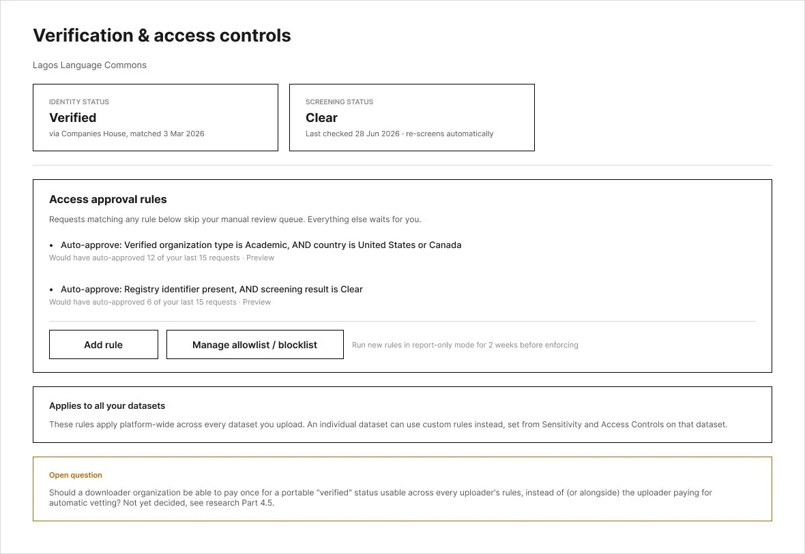
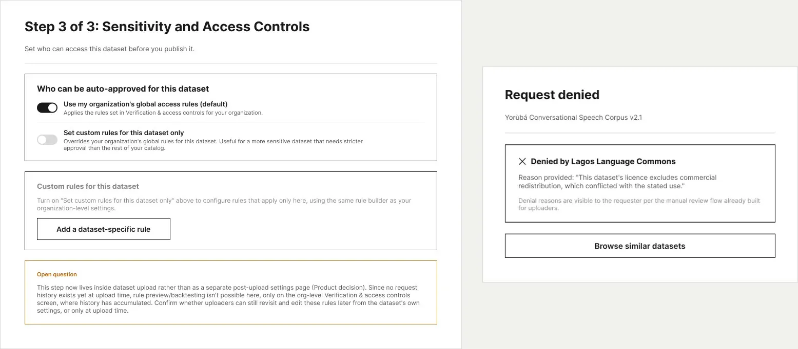
Five signals buyers can check at a glance
"Is this data any good?" doesn't have one answer. I broke it into five signals that each answer one question: how well it's documented, whether it meets standards like Croissant and FAIR, what the license allows, how access works, and whether a third party has verified it.
The free tier gets an automated documentation score. Paid signals add independent audits and validated standards. Each signal opens to show its evidence, such as the validator, the date, and the report.
ThinkingThe documentation score measures completeness, not whether the data is accurate. So the screen says exactly that. A quality signal that overpromises does more damage than having none.
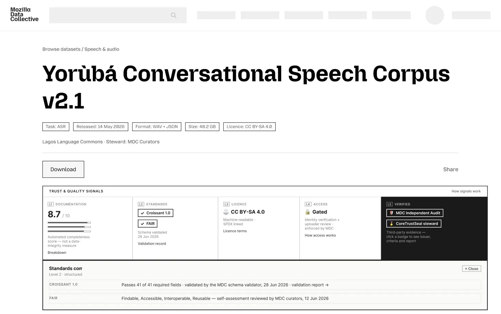
A services marketplace the team can actually run
Organizations need more than data. They need curation, annotation, and collection. I designed a services directory where verified providers list what they offer and buyers request to connect, with contact details hidden until both sides agree.
The other half is the platform team. Every new listing lands in a review queue where staff check the submission, assign a verification tier, send it back for changes, or deny it with a reason the provider can see. For partnerships too early for the marketplace, a simple contact form goes to the team's shared inbox.
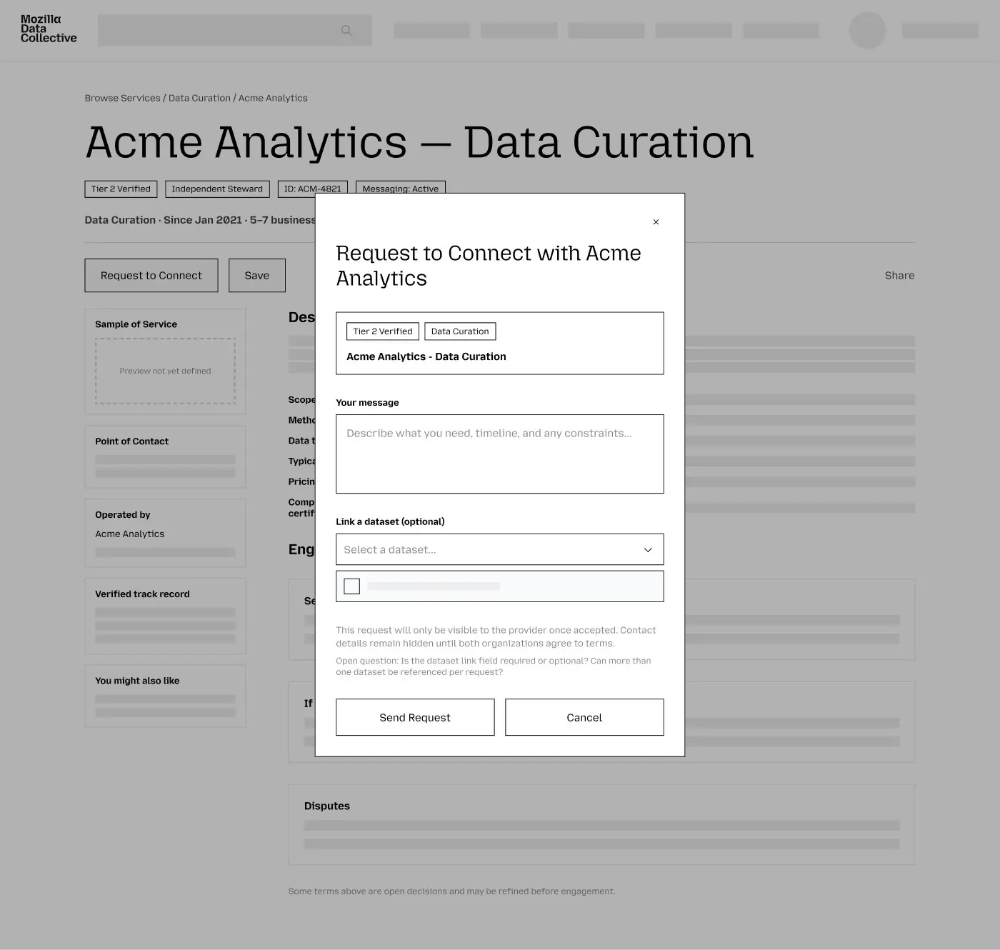
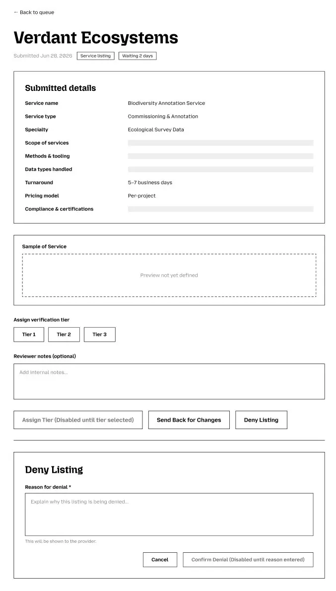
A brand and system to build on
I wrote the brand guidelines that every screen above follows, ten pages under one idea: Open data, well tended. They cover the logo and its clear space, a palette led by Brand Orange #F07424, 37 named color tokens so nobody hard-codes a hex value, display and body type scales, a 4 px spacing scale with 12, 8, and 4 column grids, and the core components. I rebuilt the design system as code-first components in Claude Code, so engineering built from the same source and handoff went from weeks to days.
I also kept decisions visible in the files themselves. Every unresolved choice sits in an "Open question" note on the screen it affects, so product and engineering could resolve it in context instead of in a meeting.
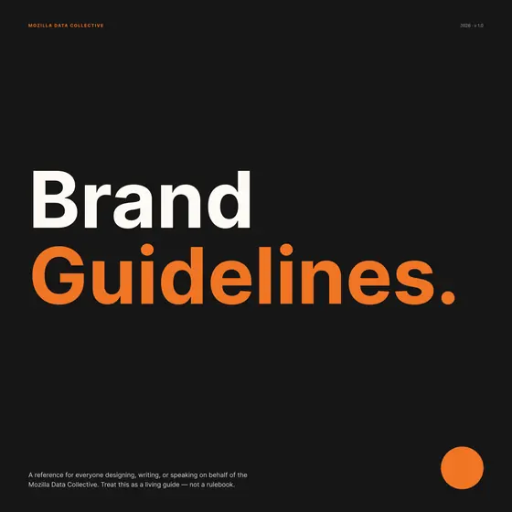
01 · Cover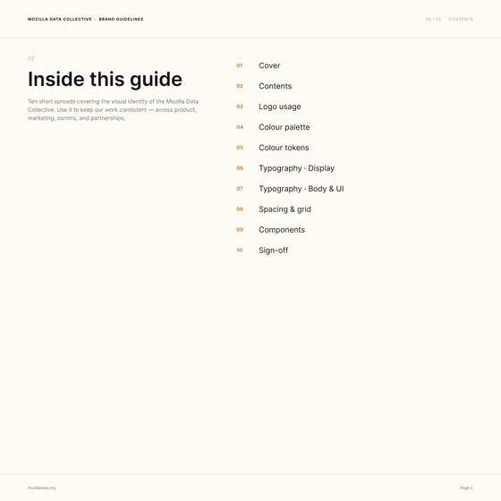
02 · Contents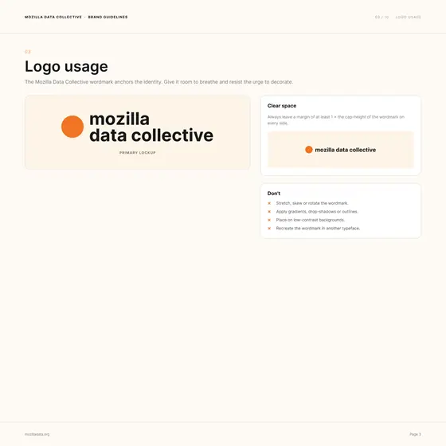
03 · Logo usage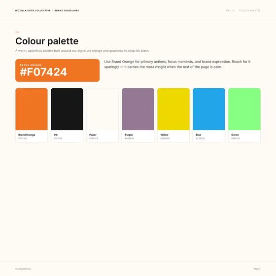
04 · Colour palette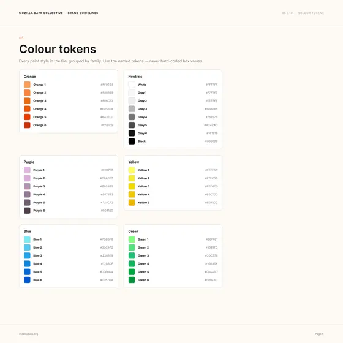
05 · Colour tokens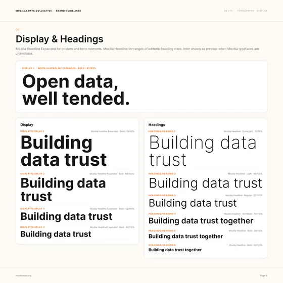
06 · Display and headings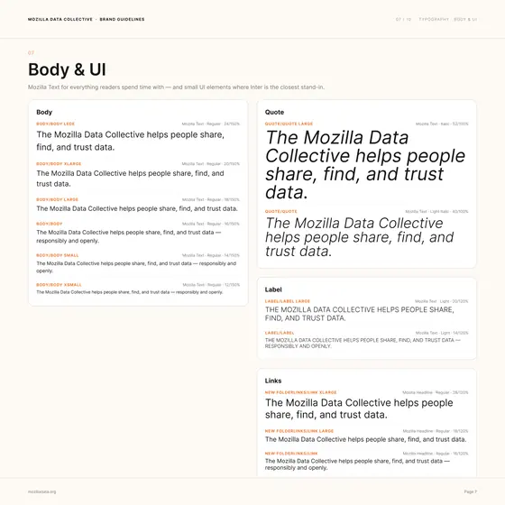
07 · Body and UI type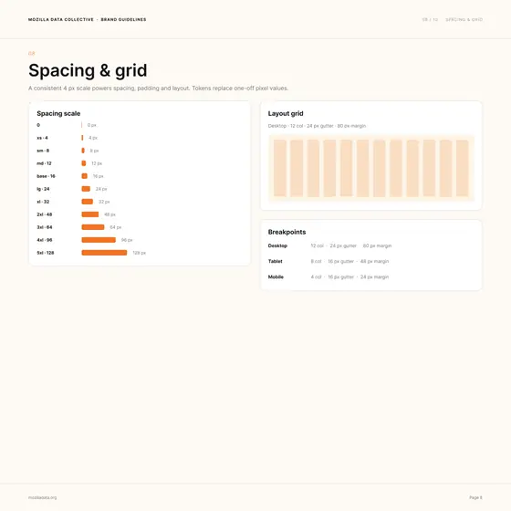
08 · Spacing and grid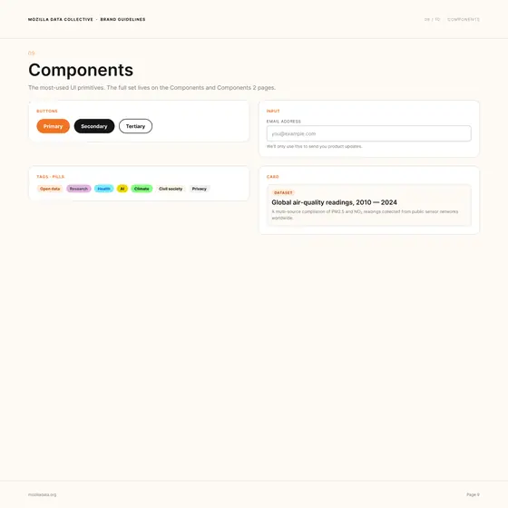
09 · Components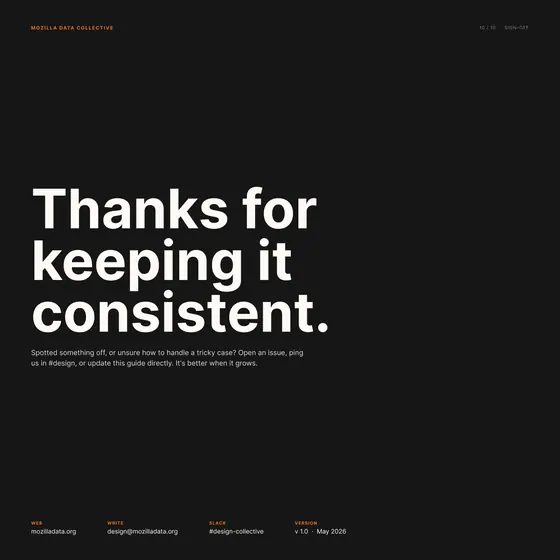
10 · Sign-off


All ten pages of the brand guidelines. Select a page to open it full size.
Designed in Figma, without touching a pixel
Every screen, flow, and diagram in this case study was built in Figma through Claude Code and the Figma MCP server. I didn't place a single pixel by hand.
The design work didn't go away. It moved. I did the research, wrote the architecture and the access rules, made the product calls, and wrote each screen as a spec: what it's for, what decisions it holds, and what's still open. Claude Code built the frames in Figma from those specs, using the brand system, and I reviewed and redirected them until they were right.
ThinkingWhen building screens costs minutes instead of days, the scarce skill is knowing what to build and why. That let a small team explore the whole platform, not just the next feature, and put real flows in front of product and engineering early.
Where it landed
- Access control launched. Request to Access went live in May 2026, so owners can require approval before a dataset can be downloaded.
- At real scale. Mozilla Data Collective now holds 600+ curated datasets from 190+ vetted organizations in 300+ languages.
- A roadmap with evidence. Pricing research across 200+ datasets, the survey, and the architecture gave the team one map of what to build next, what it's worth, and what's still open.
- Built for payment. The same structure underpins upcoming paid licensing, where data owners set their price and keep 100 percent of the fee.
Screens are design files from 2025 and 2026. Some are mid-fidelity and some features are still in progress. Dataset and organization names are examples.
Source: Mozilla Foundation, May 2026